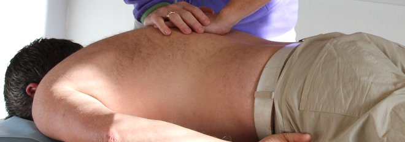

Har du muskel-skjelett plager kan våre erfarne manellterapeuter tilby grundig undersøkelse og vurdering, deretter behandling og oppfølging.
Timebestilling kan gjøres online her.

Du kan gå direkte til manuellterapeut uten henvisning fra fastlege. Det blir ikke dyrere for deg.
Har du behov for hjelp raskt, har vi avsatt timer for akutte tilstander.Ta direkte kontakt på telefon 928 70 100
Lysaker Manuellterapi ligger på "Lysaker-lokket". Vi deler lokaler med Lysaker Fysioterapi og Akupunktur AS. Vi samarbeider godt om våre pasienter og drar nytte av hverandres kunnskap og spesialfelt. Se www.lysaker-fysioterapi.no. Det er kort vei til buss, tog og parkeringsmuligheter i parkeringshus.